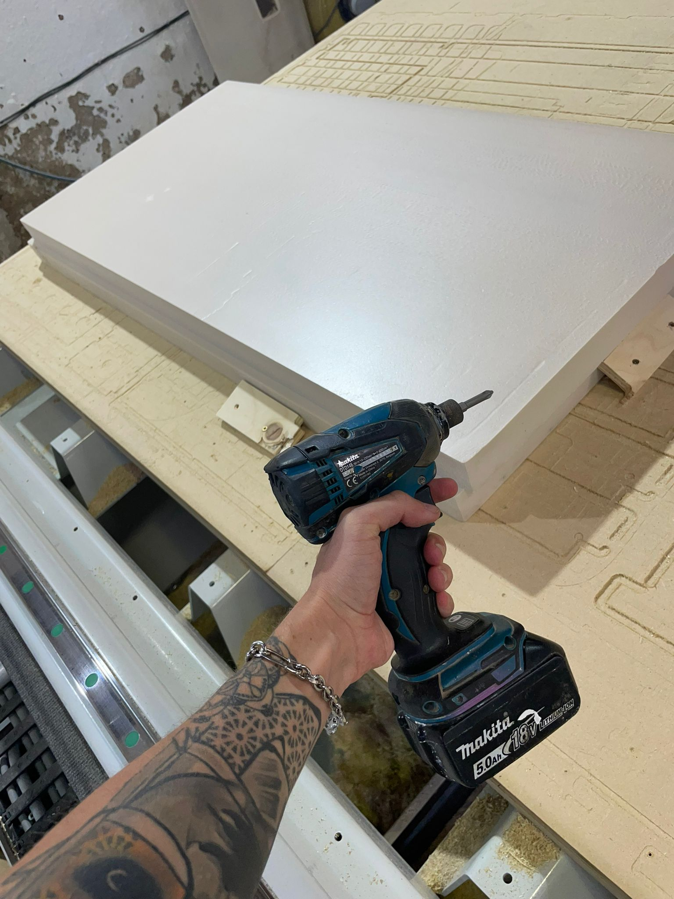
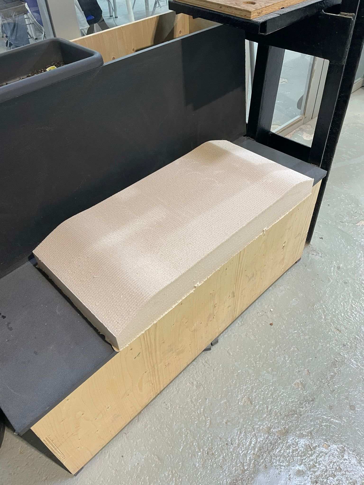
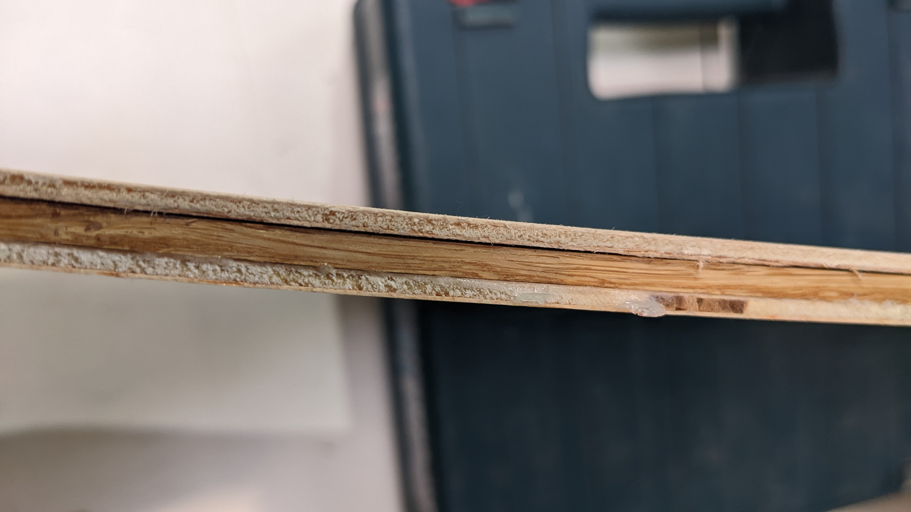
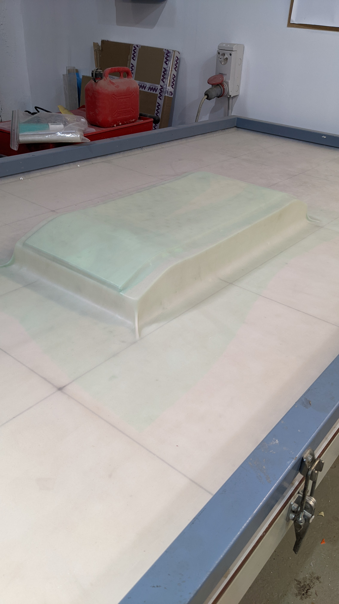

Wildcard Assignment
Our assignment this week is to Design and produce something with a digital fabrication process (incorporating computer-aided design and manufacturing) not covered in another tasks. Nikita and I joined forces to design and manufacture a skateboard mould which we would then pair with some wood and a vacuum former to give it the shape of the skateboard.
Design & Manufacture
First we created a CAD of the mould that would be able to be cut with the CNC machine. For our mould making, we chose to use a medium-density Polyurethane tooling board. These boards are lightweight and by attaching two boards together, one can create a larger sized model.

The material serves its purpose of prototying, but I personally had very encountered feelings doing this when my project is precisely about degrading polyurethane. Maybe a good spin-off would be to use polyurethane to make moulds for mycelium-based products and then using the fungal strains to degrade these polyurethane moulds.

Once the CNC was finished cutting we had our final mould. For hydraulic pressing we would need both a negative and a positive, but for vacuum only one is needed.

Vacuum Former
Once we had the mold we could get started on the process of preparation for the vacuum former.
An important detail to think about is that one should have a mould bigger than the wood pieces so it doesn't break the cover of the vacuum.
Our process of preparation was as follows:
- Decide on width/height parameters for the deck (since there is concave you probably want it to be a bit larger than the mold, but it's a bit tricky)
- Choose wood materials
- Measure and cut with the circular saw and for perpendicular cuts we used the saw next to laser cut room
- Glue them up
- Put on the vacuum and seal for at least 24hrs;
For this first version we utilised two pieces of 3mm plywood plus one piece of 5mm bamboo in between glued with cola blanca. The deck size is of 780x195mm with a simple shape, no side concaves.

It's important to cover everything with 3 layers of the green plastic sheets so the glue doesn't mess with the vacuum cover. After preparing the wood and setting it on the mould, we would lay them on the vacuum mould and seal it for 24 hours.

Final Results
After letting the vacuum former seal the mould and the wood together for 24 hours, we returned to the machine to see the product. The wood had succesfully bent into the shape of the mould. One thing we noticed fairly quickly is that it didn't bend the concave all the way down. Perhaps had we left it in the machine for longer it would have bent as desired, nevertheless the result was still a success.
We then laser cut the outline of the skateboard and laid it on the bent wood to mark its shape. Afterwards we cut the wood with a saw to obtain the desired shape.

Once cut, we tested the rigidity of the skateboard. We were afraid that maybe it was too weak but in reality it could sustain a lot of weight. As skateboard properties go, it is great for cruising but not so good for tricks.

We attached some wheels to it and rolled around IaaC, big hit!